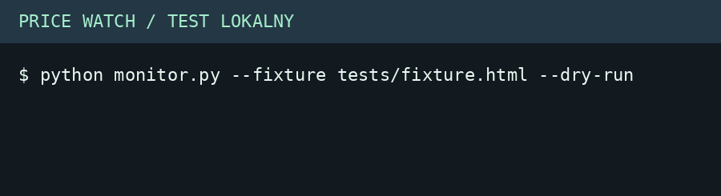

Projekt koncepcyjny – marka fikcyjna
Price Watch
Monitor cen i alerty dla katalogu testowego Books to Scrape.
Próba lokalna

Pobierz GIF · Pobierz wynik TXT · Kod i instrukcja
Jak działa
Playwright odczytuje katalog. BeautifulSoup wydobywa tytuły i ceny. SQLite zapisuje zmiany, a kolejka przechowuje alerty pasujące do filtra.